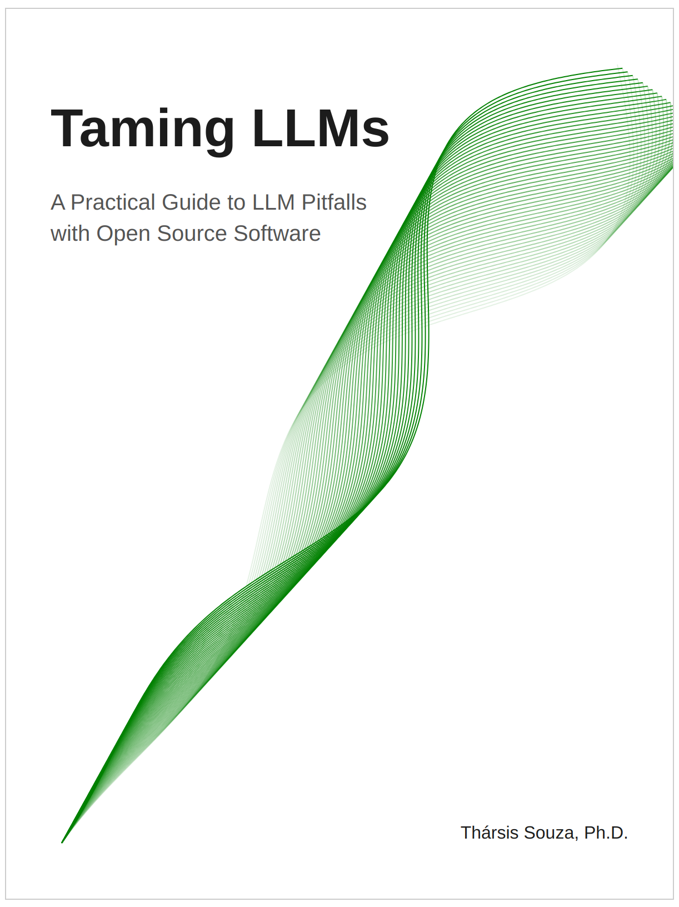

Sign-up to receive updates on new Chapters here.
Taming LLMs¶
A Practical Guide to LLM Pitfalls with Open Source Software¶
Abstract: The current discourse around Large Language Models (LLMs) tends to focus heavily on their capabilities while glossing over fundamental challenges. Conversely, this book takes a critical look at the key limitations and implementation pitfalls that engineers and technical leaders encounter when building LLM-powered applications. Through practical Python examples and proven open source solutions, it provides an introductory yet comprehensive guide for navigating these challenges. The focus is on concrete problems with reproducible code examples and battle-tested open source tools. By understanding these pitfalls upfront, readers will be better equipped to build products that harness the power of LLMs while sidestepping their inherent limitations.
Preface¶
About the Book¶
Chapter 1: Wrestling with Structured Output¶
Chapter 2: Input Data Challenge¶
Chapter 3: Output Size and Length Limitations¶
Chapter 4: The Evals Gap¶
Chapter 5: Safety Concerns¶
Chapter 6: Preference-based Alignment¶
Chapter 7: Breaking Free from Proprietary Models¶
Chapter 8: The Cost Factor¶
Chapter 9: Frontiers¶
Appendix A: Tools and Resources¶

@misc{tharsistpsouza2024tamingllms,
author = {Tharsis T. P. Souza},
title = {Taming LLMs: A Practical Guide to LLM Pitfalls with Open Source Software},
year = {2024},
journal = {GitHub repository},
url = {https://github.com/souzatharsis/tamingLLMs)
}